This is the main backing fiff for the song. If you play this as a duo you will play the riff throughout with embellishments on the melody side. You can play the low F instead of the Low C every 4 or 8 measures.
